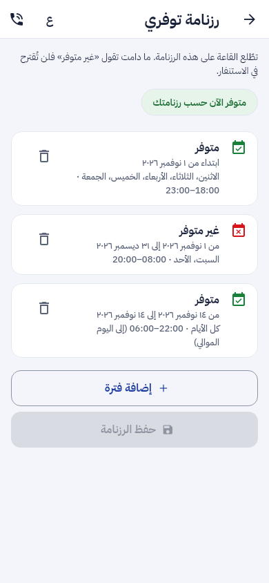
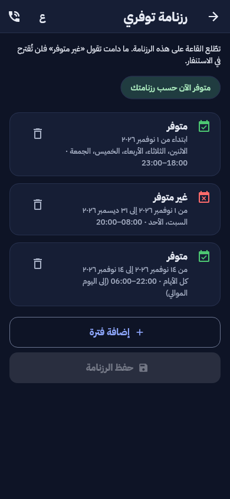

تقرير المرحلة D (المرحلة 3 من خطة المراحل الخمس): العرض أمام اللجنة على حاسوب واحد دون إنترنت، تنبيه صاحب الكاميرا، قنوات الاستغاثة، الخريطة دون اتصال، بث الفريق، الإملاء، معرض الوسائط، ترتيب القائمة، الإجابة على الاستنفار برسالة موقّعة، وتفريغ الرسائل الصوتية للفريق.
/settings/menu) لمدير النظام.رزنامة التوفر في تطبيق الهاتف (N-2)، من الشاشة الحقيقية بخطّ التطبيق:


مخططات التسلسل الجديدة:
7n-seq-prealert: التنبيه المسبق لصاحب الكاميرا.7o-seq-callout-sms: الإجابة على الاستنفار برسالة موقّعة.7p-seq-crew-media: بث الفريق ورسائله الصوتية ومعرض التدخل.وهي في ملف المخططات diagrams/e-Himaya_Diagrammes_UML.pdf بملفات المشروع.
| البند | الحالة | التقدم |
|---|---|---|
| 16 العرض على حاسوب واحد دون إنترنت (FR-D-01) | منجز | |
| 25 تنبيه صاحب الكاميرا والتصعيد بعد 90 ثانية (FR-D-02) | منجز | |
| 7 واتساب ونسخ الإحداثيات (FR-D-03) | منجز | |
| 6 ترتيب قنوات الاستغاثة والبريد (FR-D-04) | منجز | |
| 3 حمولة الإشعار دون معطى شخصي (FR-D-05) | منجز | |
| 18 الأماكن الأقرب على خريطة دون اتصال (FR-D-06) | منجز | |
| 17 البث من تطبيق الأعوان (FR-D-07) | منجز | |
| 19 الإملاء وسجل التصحيحات (FR-D-08) | منجز | |
| 21 معرض وسائط التدخل (FR-D-09) | منجز | |
| 9 ترتيب القائمة بالسحب (FR-D-10) | منجز | |
| S2-5 الإجابة على الاستنفار برسالة موقّعة (FR-D-11) | منجز | |
| S2-1 الرسائل الصوتية للفريق وأوقات المهمة (FR-D-12) | منجز | |
| N-2 لقطة رزنامة التوفر (—) | منجز |
تقدم المرحلة D: 100%.
| المكوّن | العدد | النتيجة |
|---|---|---|
| الخلفية (pytest) | 1166 (وتخطّي 2)، منها 15 في test_phase_d.py | 1155 ناجحة على القاعدة المحلية. 11 اختبارا من وحدات أخرى (الشذوذ، المستشفيات، اللجنة الطبية، البرامج، النافذة، التعلم، التحليل، العتبات) تفشل بسبب معطيات تراكمت في هذه القاعدة من جلسات سابقة، وتفشل بالشكل نفسه على الفرع الرئيسي قبل هذه المرحلة؛ CI على قاعدة جديدة هو الحَكَم |
| الترحيلات | نزولا إلى 0087 ثم صعودا حتى 0088 | ناجحة |
| لوحة القيادة (vitest) | 645 | كلها ناجحة، وtsc و eslint دون ملاحظة |
| تطبيق الهاتف (flutter test) | 600 | كلها ناجحة، وdart analyze دون ملاحظة |
ruff و mypy، و OpenAPI و ERD | — | لا ملاحظة، والملفان مُعاد توليدهما |
5ecd7484666c7b9a).لا حزمة جديدة. القائمة الكاملة في versions.md.
0088 · 1
org.prealert و ai.dictation وبث الفرق ومفتاح EH3 وتفريغ الرسائل الصوتيةalembic upgrade head619 مسارا · 745 عملية · 2
/orgs/{id}/prealerts و /crew/missions/{id}/stream و /staff/dictation و /staff/incidents/{id}/media و /me/volunteer/sms-keyإعدادان · 2
orgs.prealert_seconds (90) و menu.orderspec/: F-APP-148 إلى 151 و F-STF-14 و F-DSH-119 إلى 122 و F-SRV-62 و 63، 619 مسارا و745 عملية، 88 ترحيلا، الاختبارات، وخارطة الطريق.diagrams/: ثلاثة مخططات تسلسل (7n و 7o و 7p)، وحالات استعمال جديدة للمواطن والمتطوعين والمؤسسات والقاعة.presentation/: 54 مرحلة والاختبارات وخارطة الطريق.phase-d/، وأدلة التنصيب، والمؤجَّل (D-1 و D-2).الدمج، ثم المرحلة 4 (الوثائق والأمن: 11 و 14 و 20 القاموس و 12 و 15 و 13)، ثم المرحلة 5 (الإنتاج بعد المصادقة).